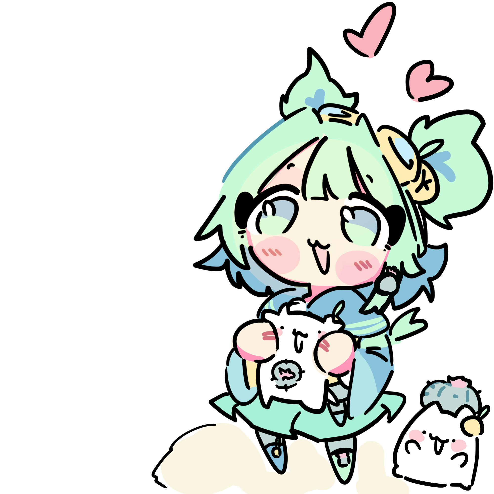

Projets actuels couverts
Charte de reconstruction Yuzuctus
Une base visuelle unique pour refaire tous tes sites.
Cette page sert d abord a reconstruire correctement tes projets. Elle doit etre lisible par un humain, exploitable par une IA, et assez solide pour servir aussi de demo technique dans un portfolio.
Le shell doit tenir avant la deco: encres lisibles, accents diriges, presence du personnage limitee et claire.
Humain first
IA readable
Sites statiques ou apps

Pages examples prêtes a ouvrir
Usages officiels du personnage
Principes de la charte
La palette et Yuzu donnent la personnalite. La structure et les regles evitent l effet template ou l effet IA.
Base commune
Les surfaces, la typo, les etats et les contrastes restent stables sur tous les projets.
Accent par projet
On change l accent et le ton, pas toute l identite. Pas de theme completement different a chaque site.
Personnage cible
Yuzu apparait au hero, dans les empty states et dans les details affectifs. Pas partout, pas en deco gratuite.
Lisibilite avant deco
Les textes courts utilisent les encres, pas les pastels. Les motifs restent doux, jamais envahissants.
Projets cibles
Au lieu de parler de categories abstraites, voici la traduction directe pour tes sites reels et tes prochains projets.
Hub personnel / landing sociale
Hero plus chaleureux, cartes bento, portrait visible, blush en details secondaires.
Tool dense et clair
Structure plus precise, tableau, toolbar, donnees lisibles, personnage limite aux moments d entree ou de vide.
Library / collection
Hero editorial, cartes media, filtres visibles, accent or plus present sans casser la lisibilite.
Tool court et utilitaire
Memes bases que les outils: feedback clair, CTA net, resultats et historique simples a parcourir.
Tokens et roles couleur
La regle cle: les encres servent au texte, les accents servent surtout aux surfaces, badges, focus et signatures visuelles.
Foundation
Fonds, surfaces, elevations, bordures. C est la base stable du systeme.
Ink
Texte principal, texte mute, liens, encre primaire. Ce sont les tokens a utiliser pour la lecture.
Decorative
Mint, lagoon, gold, blush. A utiliser pour les surfaces, pas pour du petit texte critique.
Foundation surfaces
Ink colors
Decorative accents
Assets Yuzu officiels
Trois usages publics seulement. Cela permet de garder la DA forte sans transformer chaque interface en galerie d illustrations.
Portrait hero
A utiliser pour les landing, les pages signature et les introductions de projet.

Mascot / chibi
A utiliser pour les empty states, l onboarding, les confirmations et les moments plus humains.

Micro stickers
A utiliser en petite dose: badges affectifs, coins de cartes signatures, rappels visuels discrets.


Composants et compositions
Ici on montre des blocs qui ressemblent vraiment a tes sites: hub de liens, toolbar, cards media, auth, tableau et empty states.
Hub personnel / link cards
Twitch
Live, clips, archives et entree rapide vers les contenus les plus chauds.
En directEntrer
Skins Library
Collection, favoris et tags avec une lecture plus calme et plus hierarchisee.
CollectionParcourir
Osurea Viewer
Analyse visuelle, quick launch et actions d outil plus directes.
ToolLancer
Toolbar + filtres
Alerts et feedback
Succes
Le ton est clair, sans sur-decoration.Regle
Les accents decoratifs ne servent pas de petit texte.SystemPremiumReadyReview
Tool table
| Projet | Etat | Accent | Usage personnage |
|---|---|---|---|
| Yuzuctus | Landing | Blush + mint | Hero + cartes signature |
| Osurea | Tool | Lagoon | Empty state uniquement |
| Skins | Library | Gold | Hero + rappels |
Auth + empty state
Quand il n y a rien a afficher, la mascotte peut aider. Quand il y a deja beaucoup d information, elle doit s effacer.
Modal et toast demo
Pages examples a ouvrir directement
Ces pages servent a juger la charte dans des contextes reels. Elles doivent etre ouvertes individuellement, comme des mini maquettes vivantes.
Landing
Page d accueil / hub perso
Melange de hero signature, cartes bento, liens principaux et mise en avant de tes projets.
Connexion
Page auth
Une maquette de connexion plus premium, avec duo carte utile + visuel identitaire.
Tool
Dashboard utilitaire
Toolbar, KPIs, panels et tableau pour representer Osurea ou Zest sans surcharge visuelle.
Library
Catalogue / collection
Sidebar de filtres, cartes media, hero editorial et accent or pour les pages de browse.
Regles pour humain et IA
La charte doit etre assez claire pour un designer ou un dev humain, mais aussi assez structuree pour guider un agent IA sans ambiguite.
Human flow
Checklist humain
Le projet doit d abord se lire comme une vraie interface, puis seulement comme une direction artistique.
- Commencer par le type de projet reel, pas par la couleur.
- Utiliser les encres pour le texte, les accents pour les surfaces et le focus.
- Placer Yuzu au hero, en empty state ou en petit rappel, jamais partout.
- Verifier que la page reste bonne meme sans l illustration.
AI guardrails
Checklist IA
L IA doit suivre le shell, les roles couleur et la hierarchie avant toute personnalisation locale.
- Conserver la base commune avant toute personnalisation.
- Ne pas inventer de nouvelles couleurs hors tokens.
- Ne pas transformer le style en template startup generique.
- Donner la priorite a la lisibilite, aux bordures douces et aux cartes bien structurees.
PROJECT TYPE: social hub | tool dashboard | library catalog UMBRELLA BRAND: Yuzuctus CHARACTER USAGE: portrait hero, mascot empty state, micro sticker only TEXT RULE: use ink tokens for readable copy, never pastel accents for dense text STYLE RULE: soft rounded shells, clean borders, authored layout, no random gradients ACCENT RULE: mint for action, lagoon for tools, gold for highlight, blush for emotion only ANTI AI RULE: no generic SaaS look, no purple default, no empty visual noise
Livraison et docs
Le repo ne sert pas seulement de UI kit. Il sert de reference officielle pour reconstruire les projets et expliquer la direction a quelqu un d autre.
README habille
Version longue, structuree et stylee pour lire la reference projet dans de bonnes conditions et reutiliser le meme rendu sur les futurs contrats.
design_contract.json
Contrat machine lisible avec roles couleurs, projets cibles, usages du personnage et contraintes de style.
Pages examples
Mini maquettes vivantes pour juger le rendu reel avant de toucher aux vrais sites.